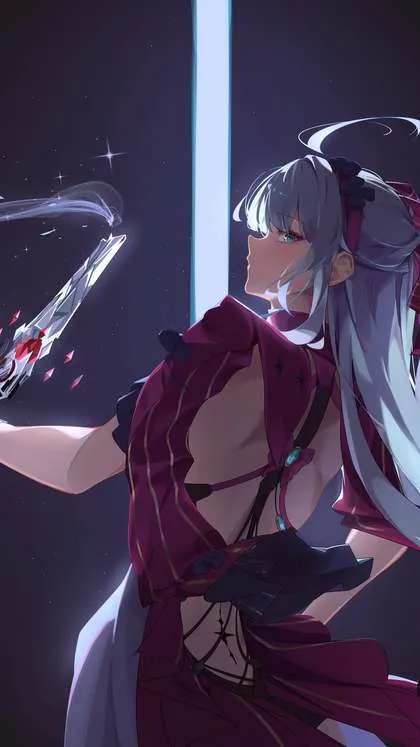

The Most Anticipated Anime Games of 2027 (and What We Know So Far)
Last updated: 8 October 2026
Every year brings a fresh wave of anime-styled games, and the titles lined up for 2027 look unusually varied: open worlds, rhythm games, romance RPGs and supernatural mysteries. What makes this list tricky is that very few of these games actually have a confirmed release date. Most are still in development, with studios sharing trailers, beta tests and platform plans but no firm launch window. So rather than pretend otherwise, this round-up is explicit about what is confirmed and what is not. Below you will find the projects drawing the most attention, what their developers have said so far, and which one has a real date on the calendar.
The games at a glance
The table below summarises the titles covered in this article. Where the status column reads "No release date," the developer has not announced a launch window, and any specific date you see elsewhere should be treated with caution.
| Game | Studio | Platform | Status |
|---|---|---|---|
| Sanrio Kawaii Me Live! | Sanrio Games | iOS, Android | Global release scheduled for January 2027 |
| Neverness to Everness | Hotta Studio (published by Perfect World Games) | Not stated | No release date yet |
| Azur Promilia | Manjuu Games | PC and console | No release date yet |
| Solo Leveling: KARMA | Not stated | Mobile and PC | No release date yet |
| Silver Palace | Not stated | Mobile and PC | No release date yet |
| Ananta | Not stated | Not stated | No release date yet |
| Chasing Kaleidorider | Fizzglee Studio (Tencent) | iOS, Android, PC | No release date yet |
| FAREIDOLIA | RX Studio, published by Nexon (IO Division) | PC, console and mobile | TBA |
| Pearl in Blue | Netmarble | iOS and Android | No release date yet |
| Astraea Oratio (Asora) | Dynamis One, published by NC | Mobile | No release date yet |
Sanrio Kawaii Me Live!
This is the one title on the list with a genuine date attached. Sanrio Kawaii Me Live! is the company's first smartphone title under its Sanrio Games brand, and it is a dance and rhythm game built around Sanrio characters. Players can customise outfits and stages, and the soundtrack includes original songs created with Universal Music artists. It is free to play with optional in-app purchases, and it is headed to the App Store and Google Play. A global release is scheduled for January 2027. Pre-registration opened on 21 September 2026, and a launch live event is set for 14 January 2027 at Yokohama Kannai Hall.
Neverness to Everness (NTE)
From Hotta Studio and published by Perfect World Games, Neverness to Everness is an anime-inspired urban open-world RPG set in the city of Hethereau. Its hook is the way supernatural "anomalies" coexist with ordinary city life: traffic, apartments, movie theatres and police chases all share the same streets as the strange. The game was shown at Anime Expo 2026, giving players a look at its tone and setting. Despite the visibility, Hotta Studio has not announced a release date, so treat any specific launch window as unconfirmed for now.
Azur Promilia
Azur Promilia comes from Manjuu Games, the studio behind Azur Lane. It is a creature-taming open-world action game, and its key feature is that players collect, tame and then fight alongside the creatures they have gathered. It is planned for PC and console. The studio has not attached a release date to the project, so it remains one of the more anticipated titles without a confirmed window.
Solo Leveling: KARMA
Anime-style games based on popular series are a fixture of the calendar, and Solo Leveling: KARMA is the entry based on Solo Leveling. It is planned for mobile and PC. Beyond that, the details remain thin, and no release date has been announced. Fans of the series will want to keep an eye on official channels rather than relying on rumoured dates.
Silver Palace
Silver Palace is a fantasy adventure action RPG built in Unreal Engine 5. It is set in the Victorian-themed metropolis of Silvernia, a city driven by a mysterious element called Silverium. The player takes the role of a Detective returning to the city. Combat leans on action, with real-time character switching and QTE combos. It is planned for mobile and PC. No release date has been announced.
Ananta
Previously known as Project Mugen, Ananta is a free-to-play urban open-world RPG. Players take on the role of a supernatural investigator called an "Infinite Trigger," operating in the city of Nova Inception Urbs. The game has drawn comparisons to an "anime GTA" because of its city setting and free-roaming structure. It has no announced release date.

FAREIDOLIA
FAREIDOLIA comes from Blue Archive's IO Division, developed by RX Studio and published by Nexon. It is a supernatural game with an anime aesthetic. Its cast is a group of teenagers living in a cosy home called Tasogare Hall, where they investigate supernatural occurrences. Combat is turn-based but blends in real-time elements. It is planned for PC, console and mobile, and its release date is listed as TBA.
More titles on the radar
A few other games are worth watching even though they sit behind the biggest names above.
Chasing Kaleidorider comes from Tencent's Fizzglee Studio. It is a romance RPG set in the techno-futuristic city of Terminus, where "Hysteria" monsters invade and only Kaleido Riders — girls on motorbikes with weapons — can stop them. The player is the Navigator. The studio describes it as aimed at "wholesome, fast-paced love stories" with zero NSFW content, and the build shown included over 25 hours of story content. It is launching on iOS, Android and PC with cross-progression, though no release date has been given.
Pearl in Blue is from Netmarble. It is a smartphone RPG built around a "monthly romantic comedy" concept: a fresh heroine and storyline every month, mixing romcom interactions with action-RPG mechanics, in a world where desires take shape as "Pearls." It is free to play with in-app purchases on iOS and Android. No release date yet.
Astraea Oratio (Asora) is developed by Dynamis One and published by NC. Its art and storytelling are heavily influenced by 1990s Japanese animation, and its combat is combo-driven and turn-based while blending real-time execution. It ran a global closed beta test on mobile from 2 to 6 October 2026. No release date has been announced.
Also on the radar, with no release date attached: LIMIT ZERO BREAKERS, HYPNOSYNC, Petit Planet, Sea of Remnants, The Hidden Ones, Suikoden STAR LEAP, and a Made in Abyss mobile game.
What to watch in 2027
The honest summary is that 2027's anime game calendar is long on ambition and short on confirmed dates. Only one title in this round-up, Sanrio Kawaii Me Live!, currently carries a specific launch window. For the rest, the useful signals to track are beta tests, platform announcements and convention appearances rather than rumoured dates. Astraea Oratio's October 2026 closed beta is a good example of a title moving through testing toward an eventual launch. As studios publish firmer schedules, this article will be updated to reflect them, and any title that gains a confirmed date will be marked accordingly.
Frequently asked questions
Which of these games has a confirmed release date?
Only Sanrio Kawaii Me Live! has a firm window, with a global release scheduled for January 2027. The other titles covered here have not announced release dates.
Are these games free to play?
Some are. Ananta is free to play, Sanrio Kawaii Me Live! is free to play with optional in-app purchases, and Pearl in Blue is free to play with in-app purchases. Pricing for the others has not been detailed in the information available.
Which platforms are these games coming to?
Platforms vary by title. Azur Promilia is planned for PC and console; Solo Leveling: KARMA and Silver Palace for mobile and PC; Chasing Kaleidorider for iOS, Android and PC; FAREIDOLIA for PC, console and mobile; Pearl in Blue and Sanrio Kawaii Me Live! for mobile. Platform details for some titles have not been stated.
Where can I follow updates on these games?
The most reliable updates come from each developer's and publisher's official channels, along with trade events and beta announcements. Because most titles lack a release date, checking official sources is more dependable than relying on unconfirmed launch dates.